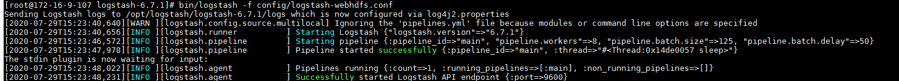
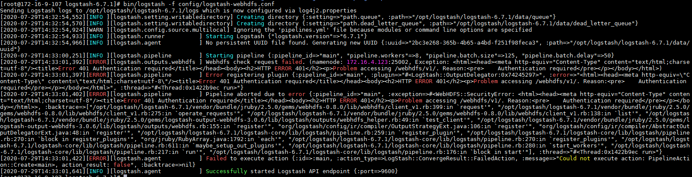
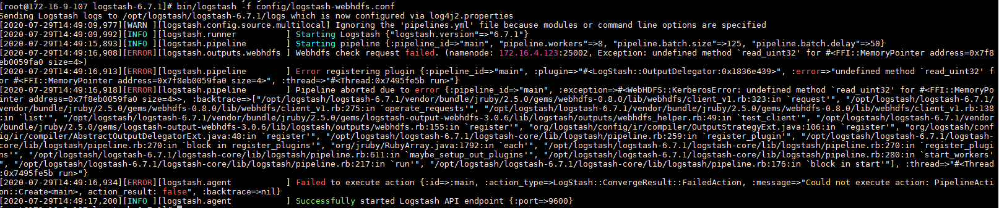
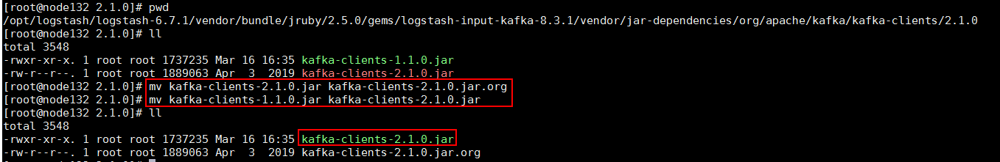
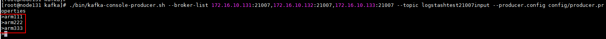
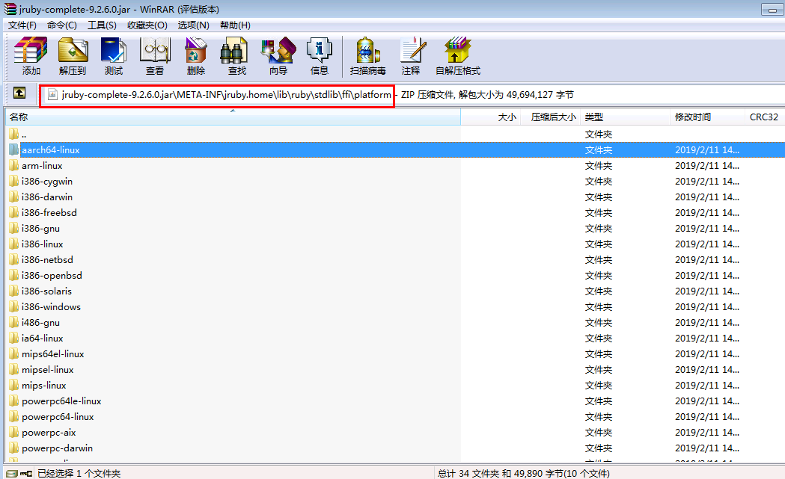
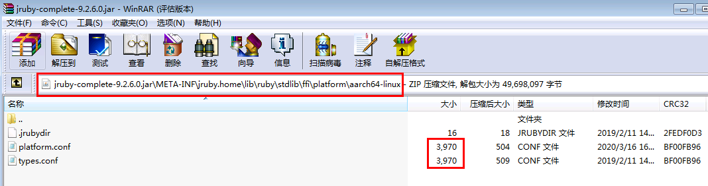
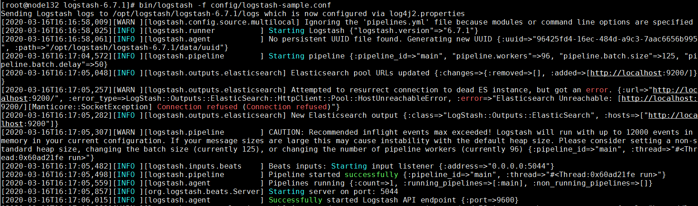

Logstash对接FusionInsight¶
适用场景¶
Logstash 6.7.1 ↔ FusionInsight HD 6.5 (HDFS/Kafka)
HDFS对接¶
HDFS对接环境说明：
logstash主机：172.16.9.107
FI HD集群：172.16.4.121-123
HDFS对接认证相关配置¶
logstash 使用包含 webhdfs output插件同集群交互，首先需要配置webhdfs相关配置项
-
HDFS是通过WebHDFS连接，前提条件是获取kerberos的缓存票据，所以需要在Logstash部署的主机上安装FusionInsight HD客户端，具体可参考产品文档相关章节《安装部署》->《软件安装》->《初始配置》->《配置客户端》->《安装客户端》
-
在FusionInsight Manager中修改HDFS的配置： dfs.http.policy 修改为HTTP_AND_HTTPS，重启HDFS

-
需要在logstash上安装gssapi插件做kerberos认证，此过程需要logstash部署主机能连外网，具体步骤为：
-
使用命令
cd /opt/logstash/logstash-6.7.1登陆logstash安装目录，然后使用命令vendor/jruby/bin/jruby vendor/jruby/bin/gem install gssapi在jruby下安装gssapi
-
使用命令
cd /opt/logstash/logstash-6.7.1登陆logstash安装目录，然后使用命令bin/logstash-plugin install --no-verify gssapi安装gssapi plugin
-
将认证所需要的的user.keytab文件放置在/opt路径下
logstash webhdfs output用例¶
- 在logstash的config目录下创建配置文件
logstash-webhdfs.conf,内容为：
input { stdin{} }
output {
webhdfs {
host => "172.16.4.123"
port => 25002
path => "/tmp/logstash/dt=%{+YYYY-MM-dd}/logstash-%{+HH}.log"
user => "developuser"
kerberos_keytab => "/opt/user.keytab"
use_kerberos_auth => true
}
}
- 使用如下命令在logstash部署主机通过FusionInsight客户端做认证
source /opt/125_hadoopclient/hadoopclient/bigdata_env
kinit developuser
- 使用命令
bin/logstash -f config/logstash-webhdfs.conf启动logstash webhdfs output

输入几条数据：

- 登陆hdfs对应路径检查结果：

HDFS对接 FAQ¶
问题1： 对接webhdfs
使用命令bin/logstash -f config/logstash-webhdfs.conf得到报错：

LoadError: no such file to load -- gssapi
没有装gssapi这个插件
解决办法：参考对接文档相关章节完成gssapi插件安装
问题2：对接webhdfs
使用命令bin/logstash -f config/logstash-webhdfs.conf得到报错：

<title>Error 401 Authentication required</title></head><body><h2>HTTP ERROR 401</h2><p>Problem accessing /webhdfs/v1/. Reason:<pre>
问题原因：use_kerberos_auth => true这个配置项没有加入到logstash-webhdfs.conf配置文件中
解决办法：增加上述配置项重启问题解决
问题3：对接webhdfs
使用命令bin/logstash -f config/logstash-webhdfs.conf得到报错：

[ERROR][logstash.outputs.webhdfs ] Webhdfs check request failed. (namenode: 172.16.4.123:25002, Exception: undefined method `read_uint32' for #<FFI::MemoryPointer address=0x7f8eb0059fa0 size=4>)
问题原因：启动时未使用kinit developuser获得缓存的认证票据
解决办法：参考对接文档相关章节加载对接环境变量以及kinit做认证获得缓存的票据在启动logstash
kafka安全模式对接¶
kafka安全模式对接环境说明：
logstash主机：172.16.2.124
FI HD集群：172.16.10.131-133
kafka安全模式对接认证相关配置¶
-
登陆集群manager下载认证用户的配置文件，user.keytab和krb5.conf并将这两个文件放到logstash安装主机的
/opt路径下 -
准备认证的jaas.conf文件，放置在logstash安装主机的
/opt路径下，内容为：KafkaClient { com.sun.security.auth.module.Krb5LoginModule required useKeyTab=true principal="developuser@HADOOP.COM" keyTab="/opt/user.keytab" useTicketCache=false serviceName="kafka" storeKey=true debug=true; }; Client { com.sun.security.auth.module.Krb5LoginModule required useKeyTab=true principal="developuser@HADOOP.COM" keyTab="/opt/user.keytab" useTicketCache=false storeKey=true debug=true; }; -
登陆logstash安装主机
/opt/logstash/logstash-6.7.1/config路径，编辑配置文件jvm.options

如图增加配置项：
-Djava.security.auth.login.config=/opt/jaas.conf
-Dkerberos.domain.name=hadoop.hadoop.com
-Djava.security.krb5.conf=/opt/krb5.conf
- 找到logstash安装路径下kafka相关jar包路径

按照上图：
-
kafka input的jar包路径:
/opt/logstash/logstash-6.7.1/vendor/bundle/jruby/2.5.0/gems/logstash-input-kafka-8.3.1/vendor/jar-dependencies/org/apache/kafka/kafka-clients/2.1.0/ -
kafka output的jar包路径：
/opt/logstash/logstash-6.7.1/vendor/bundle/jruby/2.5.0/gems/logstash-output-kafka-7.3.2/vendor/jar-dependencies/org/apache/kafka/kafka-clients/2.1.0/
分别登陆到这两个路径下，将对应FI HD kafa客户端的 kafka-client jar包 kafka-clients-1.1.0.jar拷贝到input , output的路径下
cp /opt/hadoopclient/Kafka/kafka/libs/kafka-clients-1.1.0.jar /opt/logstash/logstash-6.7.1/vendor/bundle/jruby/2.5.0/gems/logstash-input-kafka-8.3.1/vendor/jar-dependencies/org/apache/kafka/kafka-clients/2.1.0/
cp /opt/hadoopclient/Kafka/kafka/libs/kafka-clients-1.1.0.jar /opt/logstash/logstash-6.7.1/vendor/bundle/jruby/2.5.0/gems/logstash-output-kafka-7.3.2/vendor/jar-dependencies/org/apache/kafka/kafka-clients/2.1.0/
参考下图命令，将input,output路径下原来的jar包注释掉，并将拷贝过来的kafka-clients-1.1.0.jar名字修改为kafka-clients-2.1.0.jar,否则在启动logstash的时候会报错


logstash kafka input用例¶
- 在logsatash安装路径config下新建配置文件
logstash-21007input.conf内容为：
# Sample Logstash configuration for creating a simple
# Beats -> Logstash -> Elasticsearch pipeline.
input {
kafka {
bootstrap_servers => "172.16.10.131:21007"
codec => plain
topics => "logstashtest21007input"
security_protocol => "SASL_PLAINTEXT"
sasl_mechanism => "GSSAPI"
sasl_kerberos_service_name => "kafka"
jaas_path => "/opt/jaas.conf"
}
}
output {
stdout{ codec => plain }
}
-
登陆集群kafka客户端，创建topic，名字为：
logstashtest21007input -
使用命令
bin/logstash -f config/logstash-21007input.conf启动logstash kafka input任务 -
登陆kafka客户端，使用命令
./bin/kafka-console-producer.sh --broker-list 172.16.10.131:21007,172.16.10.132:21007,172.16.10.133:21007 --topic logstashtest21007input --producer.config config/producer.properties起一个kafka生产者，并输入一些数据：

- 在logstash端检查结果：

logstash kafka output用例¶
- 在logsatash安装路径config下新建配置文件
logstash-21007output.conf内容为：
# Sample Logstash configuration for creating a simple
# Beats -> Logstash -> Elasticsearch pipeline.
input { stdin{} }
output {
kafka {
bootstrap_servers => "172.16.10.131:21007"
codec => json
topic_id => "logstashtest21007"
security_protocol => "SASL_PLAINTEXT"
sasl_mechanism => "GSSAPI"
sasl_kerberos_service_name => "kafka"
jaas_path => "/opt/jaas.conf"
}
}
-
登陆集群kafka客户端，创建topic，名字为：
logstashtest21007 -
使用命令
bin/logstash -f config/logstash-21007output.conf启动logstash kafka output任务 -
登陆kafka客户端，使用如下命令起一个消费者：
bin/kafka-console-consumer.sh --topic logstashtest21007 --bootstrap-server 172.16.10.131:21007,172.16.10.132:21007,172.16.10.133:21007 --consumer.config config/consumer.properties -
在logstash端手动输入数据：

- 去kafka客户端检查结果：

关于使用ARM服务器使用logstash遇到的问题¶
在使用arm服务器使用logstash的时候，使用命令bin/logstash -f config/logstash-sample.conf
尝试启动logstash的时候遇到问题：

[ERROR][org.logstash.Logstash ] java.lang.IllegalStateException: Logstash stopped processing because of an error: (LoadError) load error: ffi/ffi -- java.lang.NullPointerException: null
参考社区： 1. https://github.com/elastic/logstash/issues/10888 2. https://github.com/elastic/logstash/issues/10755 3. https://gist.github.com/alexalouit/a857a6de10dfdaf7485f7c0cccadb98c 4. https://github.com/mew2057/CAST/blob/6c7f7d514b7af3c512635ec145aa829c535467dc/csm_big_data/config-scripts/logstashFixupScript.sh
可以得知问题原因为：logstash启动的时候读取的相关jar包jruby-complete-9.2.6.0.jar（以logstash 6.7.1为例）有配置问题。具体为jar包编译的时候对应aarch64-linux路径下缺少配置文件platform.conf
解决办法：
说明：解决办法参考社区，将logstash安装路径里的jar包jruby-complete-9.2.6.0.jar里面的路径META-INF/jruby.home/lib/ruby/stdlib/ffi/platform/aarch64-linux下的配置文件types.conf内容复制并保存为新的文件名platform.conf。 具体操作步骤如下：
-
首先先在logstash安装路径中找到相关jar包的位置，比如：
/opt/logstash/logstash-6.7.1/logstash-core/lib/jars/jruby-complete-9.2.6.0.jar -
使用winSCP工具将该jar包导出到windows本地
-
右键点击该jar包，选择使用winRAR工具打开

- 首先登陆到路径
jruby-complete-9.2.6.0.jar\META-INF\jruby.home\lib\ruby\stdlib\ffi\platform下

登陆路径x86-linux,选中platform.conf文件使用Ctrl + C复制该配置文件

登陆到路径aarch64-linux使用Ctrl + V将上一步复制的配置文件粘贴到该路径下

双击type.conf文件，将该配置文件的内容复制，并替换到platform.conf文件中并保存，使得两个文件的内容一致

- 将修改好的jar包使用winSCP工具重新导入到logstash的
/opt/logstash/logstash-6.7.1/logstash-core/lib/jars/中，并替换之前的jar包

- 重新使用命令
bin/logstash -f config/logstash-sample.conf启动成功

注意：可忽略该报错，因为没有填入有效es信息